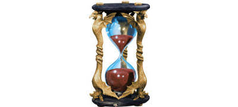

Histoire de Laelith
L'histoire de la cité est découpée par les historiens en plusieurs ères :
- De 1 à 309, l'ère du Renouveau
- De 309 à 625, l'ère de la Foi
- De 625 à 710, l'ère des Troubles
- De 710 à 995, l'ère du Développement
- De 995 à 1144, l'ère de la Colonisation
- Depuis 1144, Laelith est dans l'ère de la Prospérité
Et voici quelque dates clefs :
| -1555 | Plus vieille trace retrouvée de la présence des hulvaliniens dans l'actuelle région des Deux Lacs. |
| -700 | Création de Tanith-Lenath, la Cité des Anciens, édifiée à la demande des dieux dans une région à l'écart du monde, comme symbole de leur réconciliation. |
| -277 | Les premiers utruz sont amenés de force à Tanith-Lenath pour servir d'esclaves. |
| -131 | Implantation de gnomes des profondeurs dans ce qui sera bien plus tard la baronnie de Kaoca. |
| 1 | Le Châtiment. Les utruz survivants fuient l'esclavage et la cité. |
| 3 | 777 jours après le Châtiment, Mandala reçoit en rêve de son frère Orphyr, le futur Oracle, la vision de construire une ville nommée Laelith avec 4 grands temples représentant les 4 éléments. Construction de la ville de Laelith sur les ruines de Tanith-Lenath. Début de la construction des 4 temples. Mandala devient le premier Roi-Dieu. |
| 8 | Conséquence du Châtiment, le climat est profondément modifié. Les pluies abondantes et les hivers rigoureux donnent naissance au lac d'Altalith (le lac des Hautes-Eaux existait déjà) tel que nous le connaissons. Le surplus d'eau s'évacue par la cascade « Les cheveux de la déesse ». Début de la formation des Marais des Languissants. |
| 19 | Les utruz construisent la cité lacustre de Tal-Henth, dans la région du lac d'Altalith connue comme Aber-roc. La même année les hulvaliniens construisent leur première ville : Egonzasthan-la-basse. |
| 22 | Mandala réussi sa quête de l'Intime Quintessence, une communion parfaite avec tous les éléments, donc avec tous les dieux. Il désigne Gigogne le Preux comme son successeur. Par souci d'équité, celui-ci crée le conseil des grands prêtres, qui définiront le mode de succession des Rois-Dieux. |
| 155 | Début de la construction du palais du Roi-Dieu sur les ruines d'un palais de Tanith-Lenath. Par la suite, chaque Roi-Dieu apportera sa touche. Construction du pont des Illusions pour le transport des pierres. |
| 282 | Un prêtre utruz outrage leur Dieu-Poisson. Ce dernier déchaîne alors les éléments au fond de l'eau, et toute la communauté utruz est contrainte de quitter le fond du lac pour regagner les berges. C'est le début du déclin de leur race. |
| 291 | Organisation des magiciens des Pics des Mages : le concept des 3 pics, suivant l'expérience, est établi. Avant cela, chacun s'installait là où il voulait. |
| 333 | Lorianis, grand prêtre du temple de l'Oiseau de feu, contacte Astinas d'Alewens, un jeune artiste reconnu de la cité, pour décorer le temple qu'il trouve un peu morne. Astinas d'Alewens commence son projet par une étude de 5 ans sur des vitraux. Il lui faudra 7 années supplémentaires pour les créer et les installer. |
| 345 | Astinas d'Alewens a fini la décoration du temple de l'Oiseau de feu après 13 ans de travail. Le résultat est fabuleux. Soriamil, grand prêtre du temple du Poisson d'argent, décide alors d'engager Astinas d'Alewens pour son temple. Il travaillera 15 années entre études et remodélation. |
| 360 | Astinas d'Alewens achève la remodélation du temple du Poisson d'argent. Il est aussitôt engagé par le grand prêtre du temple du Nuage pour le décorer avec de vitraux et créer les dômes. Astinas travaillera 9 ans sur ce projet. |
| 369 | Astinas d'Alewens termine ses travaux au temple du Nuage. Il est engagé par le grand prêtre du temple du Crâne pour décorer son temple. |
| 370 | Mort d'un grand artiste de Laelith, Astinas d'Alewens, qui succombe à une crise d'apoplexie suite à une mésentente avec un contremaître nain. La décoration du temple du Crâne ne sera jamais achevée. |
| 431 | Début de construction de ce qui deviendra le Théâtre de Laelith. |
| 437 | La canicule s'abat sur la cité durant l'été et provoque une sécheresse sans précédent. La cité manque d'eau potable. Le Roi-Dieu, Cyrmalis I, demande alors à des volontaires de partir à la recherche de nouvelles sources pour approvisionner la cité. C'est le jeune Garémond qui sauvera la cité en trouvant sur les futures terres d'Olizya une source d'une pureté divine, mais il y laissera malheureusement sa vie. En sa mémoire cette source porte son nom : la source de Garémond. |
| 480 | Établissement du calendrier tel que nous le connaissons encore de nos jours. |
| 503 | Phyladis II, le nouveau Roi-Dieu, est un conquérant. Il enverra de nombreux soldats convertir les tribus sauvages aux environs de la cité. C'est la première croisade contre les peuples du désert. Alors que les moines soldats combattent, les nobles de la Haute Terrasse ont des mœurs dissolues. |
| 504 | Début de la construction du rempart nord tel que nous le connaissons (baraquements et écuries), pour se protéger des tribus du désert. |
| 532 | Début de la construction du rempart sud (porte de l'Immense Solitude Septentrionale et de l'Ivresse Enchanteresse) afin de sécuriser toute la ville. |
| 588 | Fondation de l'Académie Tolérée de Magie. |
| 625 | Début du règne de Coloquinte I, qui verra naître une série de complots et de machinations entre les temples, les nobles de la cité et les marchands. |
| 650 | Affaire du monastère du Val cerné : tentative ratée d'assassinat orchestré par un bouffon et le temple du Nuage sur le Roi-Dieu. Construction et destruction la même année du pont des Sourires. |
| 667 | Construction du Belvédère, officiellement afin de surveiller la terrasse du Châtiment, mais en réalité pour surveiller l'ensemble de la cité. À la même époque sont construits les postes de gardes qui bordent la terrasse du Châtiment. Puis dans la foulée des postes de gardes sont bâtis dans toute la cité et les terrasses sont créées au niveau administratif. |
| 683 | Construction du pont des Morts avec les os des morts durant le Châtiment. |
| 708 | Le Roi-Dieu Néphuntes est assassiné par le grand prêtre du temple du crâne Myg I Fonsalam, lors d'une réunion du conseil du Roi-Dieu. Myg I Fonsalam réussi par la force à se faire élire par les autres grands prêtres comme Roi-Dieu avant de les assassiner. Son règne est sanglant et c'est lui qui autorisera les gobelinoïdes à accéder aux temples. Il ordonnera en secret la création du temple de la Taupe. |
| 710 | Myg I Fonsalam est assassiné lors d'une révolte de la population. Les gobelinoïdes sont expulsés de la cité. Le temple de la Taupe tombe dans l'oubli mais continu d'exister. Fonvieille V, le nouveau Roi-Dieu, rétabli l'ordre dans la cité et les temples. Le commerce prospère. |
| 711 | Fonvieille V ordonne la construction de la route de la falaise de Vorn. |
| 723 | Première trace de l'utilisation d'ookhabs par des humains, qui vivaient à l’état sauvage dans la région bien avant la naissance de Tanith-Lenath. Pour la construction de la route au début, puis pour le transport des marchandises par la suite. |
| 759 | Construction du pont des Pêcheurs suite au développement de cette activité. |
| 775 | Fin de la construction de la route de la falaise de Vorn par les esclaves, après 64 ans de travaux pour trouver le chemin soit-disant idéal. Elle servira à augmenter le flux de marchandises et de pèlerins vers la cité en évitant la longue et peu sûre route du sud. Construction d'un petit poste de garde à l'emplacement actuel du Lazaret. |
| 785 | Construction du Lazaret suite à une grande épidémie due à une maladie apportée par des pèlerins venant de l'ouest. Fermeture de la porte de l'Ivresse Enchanteresse par mesure de sécurité. |
| 788 | Durant le règne de Tokinafal le Septième, un hérésiarque du nom de Son-Tô créé une nouvelle religion qui a pour but de renverser le pouvoir du Roi-Dieu en créant une croisade contre les utruz. Ceci donnera lieu à de grands débats religieux qui dégénéreront en conflits armés à l'intérieur de la cité. La crise est résolue par l'acceptation d'un traité de la part des utruz, leur donnant le droit d'accéder aux temples et les exonérant d'impôt s'ils s'installent au sud de la cité. Le Roi-Dieu, qui a déployé des trésors de diplomatie pour gérer la crise, reçoit en remerciement des utruz la tapisserie de la Dernière Vague. |
| 799 | Une colonie naine s'installe sur le flanc de la falaise de Vorn. |
| 824 | Signature du premier accord entre la colonie naine de la falaise de Vorn et Laelith pour l'extraction de minerais. |
| 830 | Le Roi-Dieu Orbal V tente de renégocier le traité de commerce et les taxes avec les nains de la colonie de Vorn. Grandes frictions entre les nains et Laelith. |
| 844 | Nadayat le précieux créé la guilde des courtisanes, et développe l'art au sein de la cité en faisant agrandir le théâtre et en créant l'Académie du bel art. C'est un règne d'intrigue et de scandale. |
| 848 | Larsky Maucastel, un puissant magicien, arrive à Laelith. Il obtient le droit, malgré l'édit de Mandala, de construire sa tour sur un îlot près du chariot qui monte. L'îlot prendra son nom : Maucastel. |
| 850 | Larsky Maucastel découvre un nouveau plan d'existence peuplé d'ombres ; ouverture d'un portail dans Maucastel et invasion de monstres. Les prêtres de la cité réussissent toutefois à contrer l'invasion et Maucastel tombe en ruine. S'en suit une « chasse au magiciens » dans la cité durant presque une année. |
| 854 | Construction du pont des Marchands suite à la congestion des autres ponts. |
| 891 | Fondation de la Haute Guilde, ex guilde des caravaniers des Deux Lacs. |
| 902 | Les deux premiers doudilains arrivent à Laelith dans les bagages d'un voyageur venant du Sud Étincelant. Les animaux s'acclimateront parfaitement à la cité et commenceront à se reproduire. |
| 929 | Début de raids de pirates sur les eaux du lac d'Altalith. |
| 931 | Construction du fort du vaisseau de pierre pour défendre la cité contre les attaques de pirates. Il tombe en ruine à la fin du siècle suite à la défaite des pirates. |
| 950 | Suite à une importante et rapide fonte des neiges et de nombreux orages durant l'été, le quartier de la Chaussée du lac est inondé plusieurs fois. Le Roi-Dieu Néphuntes II ordonne la construction du quai des Contrebandiers pour limiter les prochaines inondations. |
| 973 | Fondation d'Agramor par un renégat chassé de Laelith, Malzekiande, qui s'auto-proclame Duc. |
| 995 | Des commerçants de Laelith colonisent les terres au sud du lac d'Altalith et ouvrent un comptoir. |
| 1003 | Le comptoir au sud du lac d'Altalith fonctionnant de mieux en mieux et attirant nombre de colons, le Roi-Dieu donne naissance aux Jardins de Jadhys. |
| 1009 | Création du Pier de Braïtonne, un petit îlot fortifié devant le port du Roi-Dieu qui deviendra la résidence de villégiature des Rois-Dieux. |
| 1052 | 1ère guerre d'épuration du sang en Agramor. Les seigneurs chassent toutes les tribus orcs et gobelines de la région. |
| 1059 | Le Roi-Dieu Cémaldir XVII donne à Hériaz d'Esharzy le titre de baron du quai des Contrebandiers, suite à un banquet. Construction de la maison des Mille fleurs. |
| 1061 | Construction du tunnel du Chariot qui Monte reliant le port au palais royal afin de transporter l'eau de la source de Garémond jusqu'au palais royal. Par suite le chariot sera utilisé afin d'accélérer les déplacements et les rendre plus discrets. |
| 1069 | Fondation d'une colonie marchande au nord-ouest du lac des Hautes-Eaux qui deviendra la future Marche d'Azilian. |
| 1075 | Le nain Galianthril est condamné par la justice du Roi-Dieu à travailler 13 ans pour la cité. Il propose de construire une écluse pour relier le lac des Hautes Eaux au lac d'Altalith, afin de faciliter les échanges commerciaux avec la colonie d'Azilian. |
| 1079 | Mansour le magnifique transforme le Pier de Braïtonne en fabrique de monnaie en papyrus. L'édifice devient alors la réserve d'or de la ville sainte. |
| 1084 | Des tribus barbares venant des montagnes situées entre le Téthyr et le Bief de Vilhon s'installent sur l'actuel Olizya et assiègent Laelith durant plusieurs années. Pendant ce temps, une femme nommée Olizya soulèvent les femmes contre l'attitude belliqueuses de leurs hommes et prend le pouvoir. Le matriarcat d'Olizya est né et la province fait alors allégeance au Roi-Dieu. Les femmes resteront aux pouvoirs. |
| 1088 | La Divine Écluse est inaugurée en présence du Roi-Dieu, qui octroie à Galianthril et à ses descendants la concession de l'ouvrage. |
| 1092 | Les différentes communautés au sud d'Agramor, inquiètes des élans racistes de leur voisins du nord, se fédèrent et fondent la Fédération des Comtés d'Egonzasthan. |
| 1095 | Poussés par le fanatisme, tous les nains, gnomes et halfelins sont chassés d'Agramor. C'est la 2ème guerre d'épuration du sang d'Agramor. |
| 1096 | À la différence des nains et des halfelins chassés d'Agramor et qui se sont repartis dans les provinces avoisinantes, les gnomes eux se sont au contraire tous concentrés dans la même région, entre Olizya et Azilian. La province gnome de Kaoca est fondée. |
| 1102 | Les seigneurs d'Agramor chassent les derniers habitants non humains du duché, les elfes. C'est la 3ème guerre d'épuration du sang d'Agramor. |
| 1107 | Une invasion d'insectes ravage les forêts au nord-ouest du lac des Hautes-Eaux. Un marchand répondant au nom d'Azilian part au nord chercher des araignées géantes pour se débarrasser du fléau. En souvenir de son acte, la colonie prend le nom de Marche d'Azilian. |
| 1110 | Construction du port militaire. |
| 1211 | Début de construction d'un grand réseau d'égout pour la ville, qui sera plus tard renommé le Cloaque. L'architecte est un gnome. |
| 1244 | Toutes les tribus du désert des Marches du Couchant se regroupent (sous la pression de dirigeants de Calimshan) et attaquent Laelith. La marche d'Azilian envoie un contingent d'araignées géantes défendre la cité. En remerciement le Roi-Dieu décrète la Marche d'Azilian province autonome. |
| 1373 | Derniers travaux d'agrandissement du palais royal. Il comporte alors 5000 pièces, mais jamais plus de 2000 ne seront habitées. |
| 1424 | Agramor exterminent tous les chiens et les loups du duché. C'est la 4ème guerre d'épuration du sang. |
| 1434 | Agramor exterminent tous les rats du duché. C'est la 5ème guerre d'épuration du sang. |
| 1435 | Suite à un fort dépeuplement, la noblesse agramorienne vend, à bas prix, de grandes parcelles de terrains à des marchands, pour repeupler le Grand Duché. Création de l'assemblée des propriétaires et de la noblesse marchande. |
| 1459 | Teaphanerys XIV devient Roi-Dieu de Laelith. |
| 1489 | Aujourd'hui. |